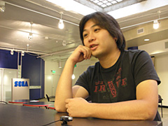
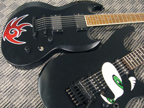

どうしたらその職業に就けますか？という質問もありました。
サウンドクリエイターを目指す人たちへ向けて、何かアドバイスのようなものが
あれば教えていただけますか？
うーん、何だろうなぁ。
僕の場合、流れ的にも、やっている内容的にも、
サウンドクリエイターとしては、特殊な方かな？と思うんですよ。
だから全体を引っ括めたことは言えないし、
「サウンドクリエイターになる道」があるワケじゃないから、
言うつもりもないけど、
知識を付けるために浅く広く勉強することは大切。
音楽でいえば、色々な音楽性の曲を聴いて、
アレンジの方法論や演奏のタイミングとか、
それこそ楽器の効果的な使い方とか
どの曲からも吸収出来ることはあると思うんですよ。
でも、自分を押し出せることに関しては、誰にも負けないくらい深く入り込んで、
強い自信と信念を身に付けて欲しいなと思いますね。
何か強い柱を自分の中に持っている人って違うもの、やっぱり。
あとは、サウンドクリエイターだけのことじゃないけど、途中で投げ出さないことと、目標を高く持つこと。
責任感は持って欲しいし、階段は昇らないと意味が無いんでね。
仕事以外の趣味も聞いていいですか？
うーん、実はあんまり無いんですよ。
自宅でもギターで何かしら、
バンド向けの曲作りとかしているしなぁ…。
強いていえば、買い物とクルマ関係ですかね。
買い物を目的として出歩くのは好きですね。
クルマは決して詳しくは無いんですが、
早くてカッコいいのが好きです。
やっぱりスーパーカー世代ですからね。
あとは、空いた時間を使って、
ファンサイトなどから寄せられたメールの返信とかも
出来るだけしていますが、なかなか全てには手が廻らないですね。
現在はどのようなお仕事をされているのですか？
（こちらの質問は2006年9月下旬に行なったものです）
今は、先日発表になったばかりの『Ｊリーグプロサッカークラブをつくろう！5』の制作が佳境です。
この系統は、前の『プロ野球チームをつくろう！3』から関わっているのですが、
今作では含まれる楽曲全ての制作を担当しています。
今冬発売予定なので、お楽しみに！
それと、同じく今冬発売予定の『アウトラン2 スペシャルツアーズ』も発表になりましたが、
これにも3曲ほど用意しました。
今年はアウトランシリーズにとって20周年とのことで、それを記念する意味合いもあって、
往年の楽曲のアレンジを2曲と書き下ろしを1曲という感じですね。
この年末には、それらの楽曲を含む
『20周年記念サントラボックス』もリリースされるので、そちらもお楽しみに。
個人的には『ターボアウトラン』の曲をアレンジしたものが気に入ってます。
ソニック関係で言えば、以前もスタジオUSA通信で紹介したPSPタイトル、
『SONIC RIVALS』（ソニックライバルズ）の制作監修をしたり、
『ソニック・ザ・ヘッジホッグ』の中に含まれているヴォーカル曲のプロデュースを手掛けていました。
今作のアーティスト交渉や歌詞の制作といったプロセス、
実際のスタジオでのレコーディングのディレクションなど、
このプロジェクトに関わる前に自分で立てた目標を上回るものをやれたんで、個人的には満足しています。
でも、あまりにも短期間に詰めて行なったので、今は燃え尽きている感じですね。（苦笑）
それこそ、毎日が何かの〆切りという感じでしたから。
それにしても、僕は見事にソニックか、スポーツか、ドライブタイトルしかやってませんね。（笑）